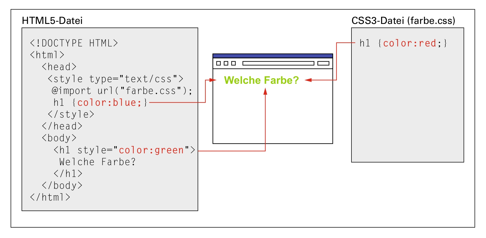
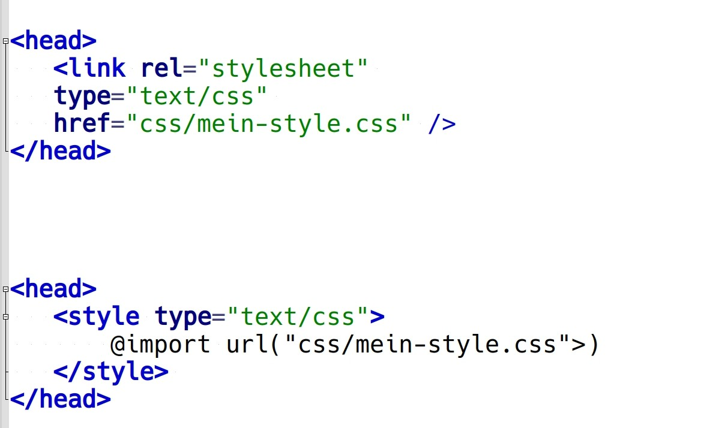
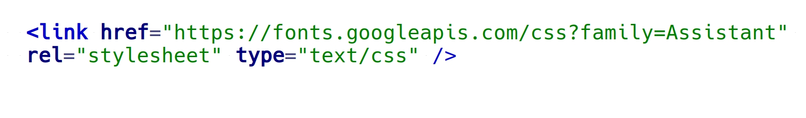
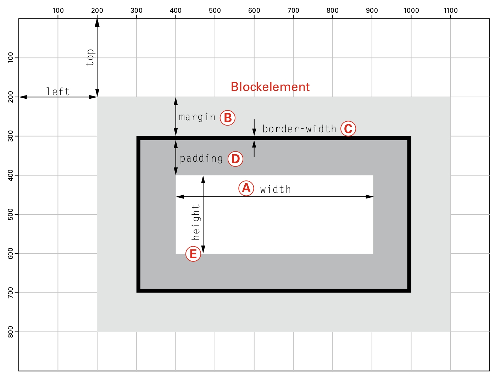

# Grundlagen von CSS<br/>(E03, Teil 1) <br/> <hr/> <br/>Prof. Dr. Christof Schöch <br/> <br/> <hr/> <p><strong>Modul Auszeichnungssprachen<br/>MSc. Digital Humanities, Universität Trier</strong></p> <hr/> <img height="60" data-src="img/basics/uni-trier.png"> :: - Ziele dieser Sitzung: - Grundlagen von CSS vermitteln -- ## Erste Schritte mit CSS <br/><small>(Bildquelle: Nutzer/in Wasservogelfrau, <a href="https://commons.wikimedia.org/wiki/File:Wasserspiele_Kassel-Wilhelmsh%C3%B6he_Kaskaden.jpg">Wikimedia Commons</a>, <a href="https://creativecommons.org/licenses/by-sa/4.0/deed.en">CC BY</a>.)</small> --- ### Inhalt/Struktur vs. Darstellung * HTML (und besonders HTML5) trennt Struktur/Bedeutung und Darstellung voneinander ab * Daher: Darstellung separat, mit CSS * CSS = Cascading Style Sheets * CSS gibt es seit 1996, derzeit CSS3 * (zusätzlich: JavaScript für Interaktivität) --- ### Warum HTML + CSS? * Arbeitsteilung: Autor:innen vs. Designer:innen * Effizienz: Ein Style für viele Seiten * Im CMS-Kontext unerlässlich (Inhalt vs. Theme) * Flexibilität: Mehrere Styles für verschiedene Zwecke --- ### Ausblick: XML + XSLT/CSS * Gleiches Prinzip: * XML für die Inhalte / Daten * XSLT für ihre Transformation (Auswahl, Reorganisation) * CSS für die Darstellung --- ### Aufbau von CSS-Regeln ``` Selektor { Eigenschaft: Wert; Eigenschaft: Wert; } ``` <br/> ``` h1 { color:blue; font-family: Arial; } ``` --- ### Selektoren (Auswahl) * "*" = Universalselektor (für alles) * Elementname (alle Elemente des Namens) * ".Klassenlabel" (alle Elemente einer Klasse) * Elementname.Klassenlabel (eine Klasse eines Elements) * Kombinationen (Liste, Hierarchie) --- ### Wo steht das CSS? * Drei Orte * Lokal: CSS3-Definition direkt am HTML5-Element * Zentral: CSS3-Definitionen im `<head>` der HTML-Datei * Externe: CSS3-Definitionen in separater Datei (mit Verweis im HTML) * Kaskadenverhältnis * (zuallererst erst Browser-Defaults) * extern (allgemein) * ggfs. abweichend zentral (spezieller) * ggfs. abweichend lokal (Einzelfälle) --- ### Kaskadenverhältnis  <br/><small>(Bildquelle: Bühler et al., <em>HTML5 und CSS3</em>, 2017, S. 12.)</small> --- ### Einbindung ins HTML  --- ### Schrifttypen * Einbinden von Schrifttypen * Ohne lokale Typen-Datei (Webfonts) * Fonts bspw. bei: https://fonts.google.com  --- ### Layout: Boxmodell  <br/><small>(Bildquelle: Bühler et al., <em>HTML5 und CSS3</em>, 2017, S. 66.) </small> --- ### Weitere Themen * Farben (u.a. Definitionen, Farbverläufe) * Typographie (Schriftarten, Zeilenumbruch) * Mehr zu Layout (Blockelemente, Textfluss) * Einfache Animationen (Keyframe-Prinzip; Bewegung, Transformation) * Responsive Design (Viewport, relative Angaben) -- ## Abschluss --- #### Lektürehinweise * Auch für CSS nützlich * Bühler et al, *HTML5 und CSS3*, 2017 (kompakte Einführung in die Grundlagend) * Stefan Münz, *HTML5-Handbuch*: http://webkompetenz.wikidot.com/docs:html-handbuch (vertiefend, Handbuch) * SelfHTML: https://wiki.selfhtml.org/(ebenfalls sehr umfassend, ideal zum Nachschauen) * Ressourcen * https://www.w3schools.com/css * https://caniuse.com * https://fonts.google.com --- ## Danke! <br/><br/> <br/><br/> <br/><br/> <hr/> <small> <br/>Lizenz: <a href="https://creativecommons.org/licenses/by/4.0/">Creative Commons Attribution (CC BY)</a>, 2020. </small> <hr/>